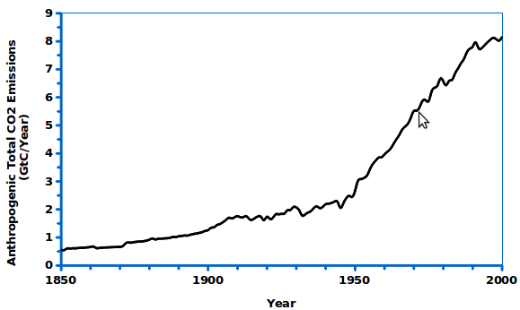
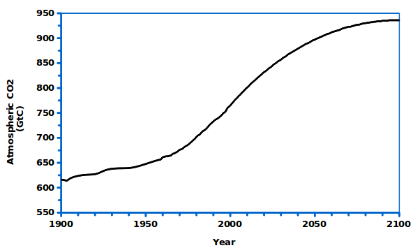

Consider the issue of global warming. In 2001, the Intergovernmental Panel on Climate Change (IPCC), a scientific panel organized by the United Nations, concluded that carbon dioxide (CO2) and other green- house gas emissions were contributing to global warming. The panel stated that“most of the warming observed over the last 50 years is attributable to human activities.”
The amount of CO2 in the atmosphere is affected by naturalprocesses and human activity. Anthropogenic CO2 emissions (emissions resulting from human activity, including combust- ion of fossil fuels and changes in land use,especially deforestation), have been growing since the start of industrial revolution (Figure 1). Natural processes gradually absorb CO2 from the atmosphere (for example, as it is used by plant life and dissolves in the ocean). Currently,the absorptions of atmospheric CO2 by natural processes is about half of the anthropogenic CO2 emissions. As a result,concentrations of CO2 in the at- mosphere have increased, from preindustrial levels of about 600 GtC to about 769 GtC today (Figure 2).
Now consider a scenario in which the concentration of CO2 in the atmosphere gradually rises to 938 GtC, about 22% higher than the level today, then stabilizes by the year 2100 as shown here:
The graph below shows anthropogenic CO2 emissions from 1900-2000, and current absorptions of CO2 from the atmosphere by natural processes.Next, you will be asked to sketch:
a. Your estimate of likely future CO2 absorptions, given the scenario above.
b. Your estimate of likely future anthropogenic CO2 emissions, given the scenario above.